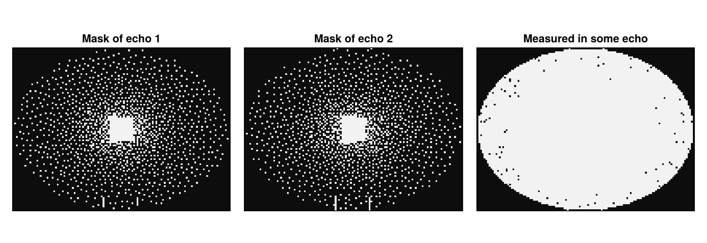
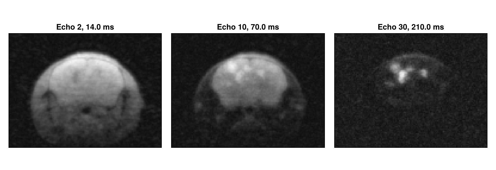
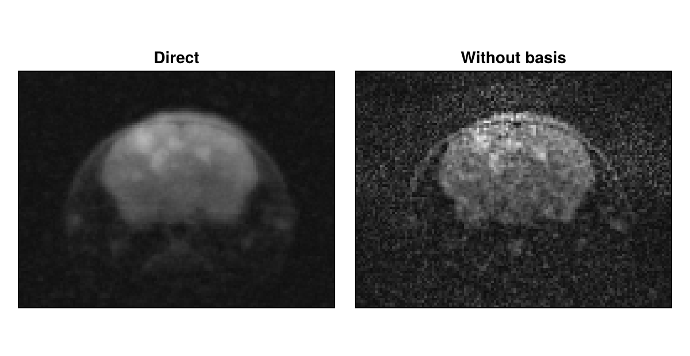
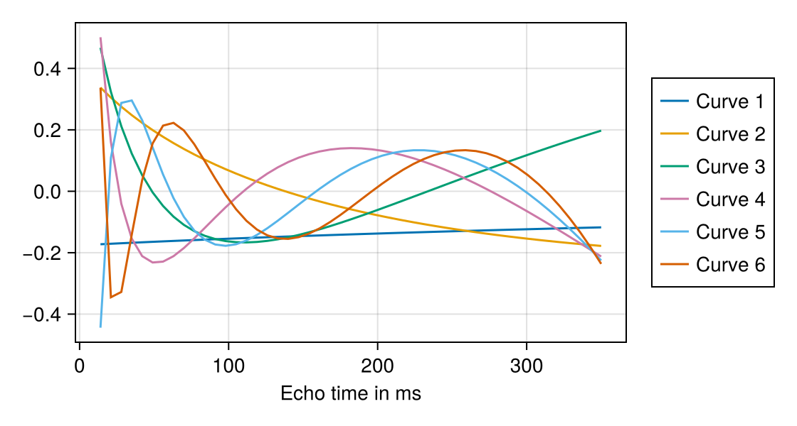
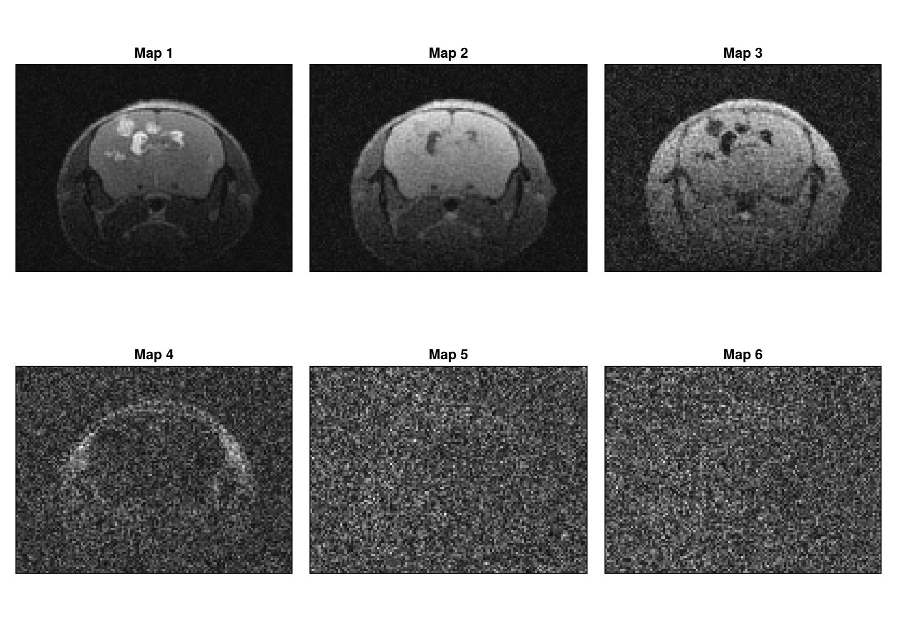
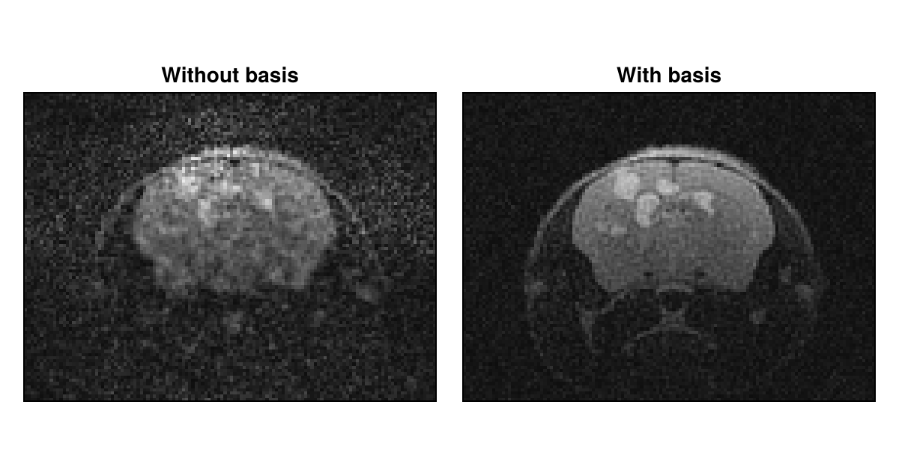
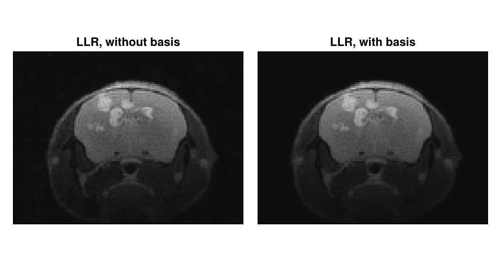
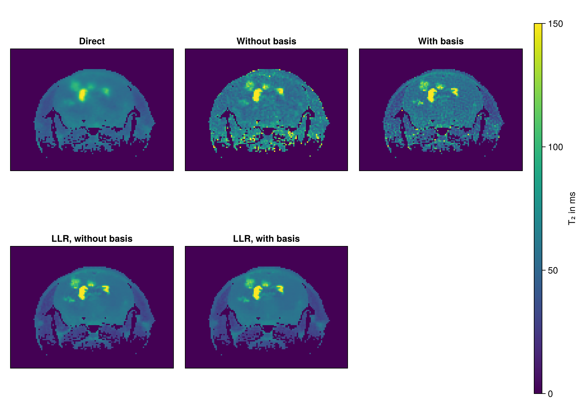

Multi-Coil Multi-Echo and Subspace Reconstruction
With several coils, the reconstruction type "multiCoilMultiEcho" reconstructs one image per echo from the data of all coils. A subspace reconstruction goes one step further. A few basis curves describe the decay curves of all tissues, so the reconstruction type "multiCoilMultiEchoSubspace" does not estimate an image for every echo, but one coefficient map for every basis curve. This tutorial reconstructs measured, highly undersampled data of a mouse brain with both types and computes $T_2$ maps from the results.
Besides MRIReco, the tutorial needs HDF5 to read the data, MRICoilSensitivities for the coil sensitivities, LinearAlgebra for the basis, Random for reproducible results and CairoMakie for the plots. The plotting function is the one from Multi-Echo Reconstruction.
using MRIReco, MRICoilSensitivities, HDF5, LinearAlgebra, Random, CairoMakie
Random.seed!(1234)
function showimages(images, titles; columns = length(images), kwargs...)
fig = Figure(size = (300 * columns, 310 * cld(length(images), columns)))
for (i, (image, title)) in enumerate(zip(images, titles))
ax = Axis(fig[fldmod1(i, columns)...], title = title,
aspect = DataAspect(), yreversed = true)
heatmap!(ax, image'; colormap = :grays, kwargs...)
hidedecorations!(ax)
end
return fig
endThe Data
Trotier et al. scanned a mouse with brain metastases at 4.7 T with a 3D multi-echo spin-echo sequence: 50 echoes, 7 ms apart, four coils and 128 × 128 × 96 voxels. To shorten the scan to 25 minutes, they measured an eighth of the samples in the two phase encoding directions, with a different Poisson-disk mask for each echo and a fully sampled center. Their dataset is licensed under CC BY 4.0.
To keep this tutorial fast, we use one plane of it. After a Fourier transform along the readout, plane 65 of 128 can be reconstructed on its own, with 96 × 128 voxels. We shifted the plane so that the head does not wrap around the image border, and scaled it. The file contains the samples with the dimensions samples, coils and echoes, their indices in the plane and the echo times in ms:
using Pkg.Artifacts
artifacts = joinpath(pkgdir(MRIReco), "docs", "Artifacts.toml")
datadir = ensure_artifact_installed("MRIRecoDocsData", artifacts; io = devnull)
file = joinpath(datadir, "mouse_brain_MESE_plane65.h5")
samples = h5read(file, "samples")
indices = Int.(h5read(file, "indices"))
echoTimes = h5read(file, "echoTimes")
size(samples), size(indices)((1534, 4, 50), (1534, 50))AcquisitionData takes one trajectory per contrast and an array of matrices, one matrix with the dimensions samples and coils for each contrast, slice and repetition. With the keyword idx, it also takes the indices of the measured samples for each echo. As we will need different echoes below, we write this as a function:
function measuredData(echoes)
tr = trajectory(Float32, "Cartesian", 128, 96)
kdata = [samples[:, :, e] for e in echoes, slice in 1:1, repetition in 1:1]
return AcquisitionData(fill(tr, length(echoes)), kdata;
idx = [indices[:, e] for e in echoes], encodingSize = (96, 128))
end
acqData = measuredData(1:50)Each echo contains 12.5 % of the samples of the plane, and together they cover 76 %:
function samplingMask(echoes)
mask = zeros(96, 128)
for e in echoes
mask[indices[:, e]] .= 1
end
return mask
end
showimages(samplingMask.([1, 2, 1:50]),
["Mask of echo 1", "Mask of echo 2", "Measured in some echo"])
The direct reconstruction of the undersampled data is blurred. With increasing echo time, the signal decays, and the metastases with their long $T_2$ stand out. Each image has its own gray scale:
params = Dict{Symbol, Any}()
params[:reco] = "direct"
params[:reconSize] = (96, 128)
rootSumOfSquares(images) = sqrt.(sum(abs2, images, dims = 5))[:, :, 1, :, 1, 1]
directImages = rootSumOfSquares(reconstruction(acqData, params))
shownEchoes = [2, 10, 30]
showimages([directImages[:, :, e] for e in shownEchoes],
["Echo $e, $(echoTimes[e]) ms" for e in shownEchoes])
Coil Sensitivities and the First Echo
As in Multi-Coil Reconstruction, we estimate the coil sensitivities with espirit from the calibration region, here the fully sampled center of the plane with 14 × 14 samples. It uses the first echo, as Trotier et al. do:
sensitivities = espirit(acqData, (4, 4), 14, eigThresh_2 = 0)Real echo trains also contain stimulated echoes, so that the signal does not follow an exponential decay exactly. With the exponential dictionary below, Trotier et al. therefore leave out the first echo, and we do the same from now on:
acqData = measuredData(2:50)
echoTimes = echoTimes[2:50]
directImages = directImages[:, :, 2:50]Multi-Coil Multi-Echo Reconstruction
The reconstruction type "multiCoilMultiEcho" combines the SENSE model of Multi-Coil Reconstruction with one image $\mathbf{x}_e$ per echo $e$:
\[\underset{\mathbf{x}_1, \ldots, \mathbf{x}_{N_e}}{\operatorname{argmin}} \; \frac{1}{2}\sum_{e}\sum_{c} \lVert \mathbf{F}_e\mathbf{S}_c\mathbf{x}_e - \mathbf{b}_{e,c} \rVert_2^2 + \mathrm{R}(\mathbf{x}_1, \ldots, \mathbf{x}_{N_e}),\]
where $\mathbf{S}_c$ multiplies with the sensitivity of coil $c$, and $\mathbf{F}_e$ and $\mathbf{b}_{e,c}$ are the Fourier transform and the measured samples, scaled as in Multi-Echo Reconstruction. We pass the sensitivities as params[:senseMaps] and start with CGNR and a small $\ell_2$ regularization. As in Iterative Reconstruction, MeasurementBasedNormalization scales the weight λ of the regularization by the mean magnitude of the measured data. The coil dimension of the result has size 1:
params = Dict{Symbol, Any}()
params[:reco] = "multiCoilMultiEcho"
params[:reconSize] = (96, 128)
params[:senseMaps] = sensitivities
params[:solver] = CGNR
params[:reg] = L2Regularization(1e-3)
params[:normalizeReg] = MeasurementBasedNormalization()
params[:iterations] = 10
result = reconstruction(acqData, params)
size(result)(96, 128, 1, 49, 1, 1)From now on, we look at the echo time of 70 ms, where the metastases stand out, in a common gray scale. The result is sharper than the direct reconstruction, but with an eighth of the samples, ten iterations already amplify the noise strongly:
echoStack(images) = abs.(images[:, :, 1, :, 1, 1])
withoutBasis = echoStack(result)
shownEcho = findfirst(==(70), echoTimes)
showecho(images, labels) = showimages([image[:, :, shownEcho] for image in images], labels,
colorrange = (0, 0.5))
showecho([directImages, withoutBasis], ["Direct", "Without basis"])
The Temporal Basis
We build the basis as Huang et al. do. A dictionary contains the signal $e^{-T_E / T_2}$ at the echo times for a range of $T_2$, as in Trotier et al. from 1 ms to 2000 ms. The first right singular vectors of this dictionary are the orthonormal basis curves:
dictionary = [exp(-TE / T2) for T2 in 1.0:2000.0, TE in echoTimes]
dictionarySVD = svd(dictionary)
round.(dictionarySVD.S[1:8] ./ dictionarySVD.S[1], sigdigits = 2)8-element Vector{Float64}:
1.0
0.096
0.019
0.0046
0.0013
0.00035
0.0001
2.9e-5The singular values fall quickly, so that few curves suffice. Huang et al. use two to four curves, Tamir et al. four and Trotier et al. six. Fewer curves describe the signal less exactly, but leave less noise. We use six. Most of them do not look like decays themselves, but their weighted sums do. The basis must be a complex matrix with the element type of the data, although its values are real:
basis = ComplexF32.(dictionarySVD.V[:, 1:6])
fig = Figure(size = (560, 300))
ax = Axis(fig[1, 1], xlabel = "Echo time in ms")
for k in 1:6
lines!(ax, echoTimes, real.(basis[:, k]), label = "Curve $k")
end
Legend(fig[1, 2], ax)
fig
Subspace Reconstruction
The reconstruction type "multiCoilMultiEchoSubspace" writes each echo image as a sum over the basis curves,
\[\mathbf{x}_e = \sum_{k} \phi_{e,k} \, \boldsymbol{\alpha}_k,\]
where $\phi_{e,k}$ is the value of curve $k$ at echo $e$ and $\boldsymbol{\alpha}_k$ is its coefficient map. It solves the problem above for the coefficient maps, with the regularization $\mathrm{R}$ applied to these maps instead of the echo images. It takes the basis as params[:basis] and returns the coefficient maps in the dimension of the echoes:
params[:reco] = "multiCoilMultiEchoSubspace"
params[:basis] = basis
coefficients = reconstruction(acqData, params)
size(coefficients)(96, 128, 1, 6, 1, 1)Each map has its own gray scale. The first maps show different mixes of the tissues, and the first two hold most of the signal. The last ones hold mostly noise:
showimages([abs.(coefficients[:, :, 1, k, 1, 1]) for k in 1:6], ["Map $k" for k in 1:6],
columns = 3)
The function applySubspace computes the echo images from the coefficient maps. In the echo image at 70 ms, the basis reduces the noise, because the part of the noise outside of the subspace does not enter the result. It also reduces the undersampling artifacts: each coefficient map takes samples from all echoes, and since the masks differ, these cover 76 % of the plane:
withBasis = echoStack(applySubspace(coefficients, basis))
showecho([withoutBasis, withBasis], ["Without basis", "With basis"])
Adding a Locally Low-Rank Regularization
The coefficient maps are spatially correlated. Tamir et al. exploit this with a locally low-rank (LLR) regularization. As in Multi-Echo Reconstruction, we use it with POGM and small steps. With POGM, MeasurementBasedNormalization uses the back-projected data. We apply the regularization to the coefficient maps and, for comparison, to the echo images of "multiCoilMultiEcho". We chose λ empirically for each of them:
params[:solver] = POGM
params[:rho] = 0.05
params[:reg] = LLRRegularization(1.0, shape = (96, 128), blockSize = (8, 8))
params[:iterations] = 100
regularizedWithBasis = echoStack(applySubspace(reconstruction(acqData, params), basis))
params[:reco] = "multiCoilMultiEcho"
delete!(params, :basis)
params[:reg] = LLRRegularization(2.0, shape = (96, 128), blockSize = (8, 8))
regularizedWithoutBasis = echoStack(reconstruction(acqData, params))
showecho([regularizedWithoutBasis, regularizedWithBasis],
["LLR, without basis", "LLR, with basis"])
The regularization removes most of the noise in both cases. With the basis, it works on six maps instead of 49 images, so that, once the code is compiled, the reconstruction is clearly faster.
Computing T₂ Maps
We fit the $T_2$ maps as in Multi-Echo Reconstruction. At later echoes, the signal of the brain approaches the noise level, which biases this simple fit towards longer $T_2$. Trotier et al. therefore fit a model with a noise term. We only use the echoes up to 140 ms, which reduces the bias. We show the maps where the first remaining echo of the LLR result with basis exceeds 15 % of its maximum:
fitEchoes = findall(<=(140), echoTimes)
function fitT2(images)
A = [ones(length(fitEchoes)) -echoTimes[fitEchoes]]
fit = A \ reshape(log.(max.(images[:, :, fitEchoes], eps(Float32))), 96 * 128, :)'
return reshape(1 ./ fit[2, :], 96, 128)
end
firstImage = regularizedWithBasis[:, :, 1]
inside = firstImage .> 0.15 * maximum(firstImage)
results = [directImages, withoutBasis, withBasis,
regularizedWithoutBasis, regularizedWithBasis]
labels = ["Direct", "Without basis", "With basis", "LLR, without basis", "LLR, with basis"]
fig = showimages([fitT2(images) .* inside for images in results], labels, columns = 3,
colormap = :viridis, colorrange = (0, 150))
Colorbar(fig[:, 4], colormap = :viridis, limits = (0, 150), label = "T₂ in ms")
fig
The direct map has little noise, but is blurred. Without the LLR term, the maps are noisy. With it, the noise is low and the metastases with their long $T_2$ have clear borders, while the rest of the brain reads mostly between 50 and 60 ms. On fully sampled scans, Trotier et al. measure 54 ms in the brain. This dataset has no fully sampled reference, so we compare the images by eye here.
Next Steps
- Subspace_MESE.jl of Trotier et al. reconstructs the whole dataset, for example with a dictionary simulated with extended phase graphs, which keeps the first echo, and a wavelet regularization.
- Multi-Echo Reconstruction explains the locally low-rank regularization and the role of the sampling masks.
- The RegularizedLeastSquares.jl documentation describes the available solvers and regularization terms.
- The API reference describes
reconstructionandapplySubspace.
This page was generated using Literate.jl.